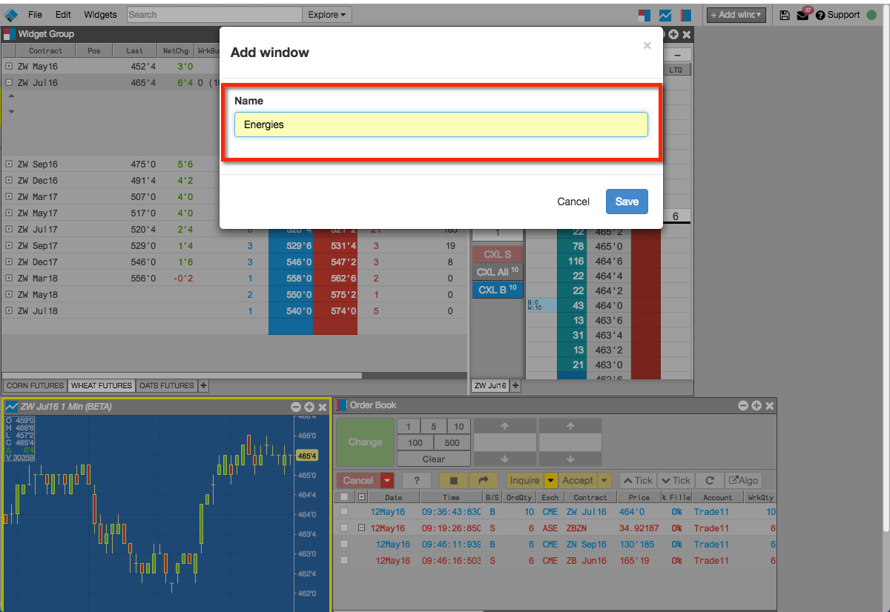
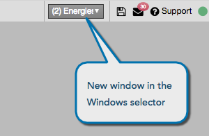
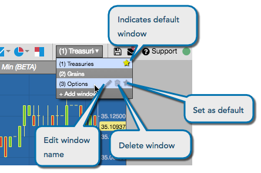
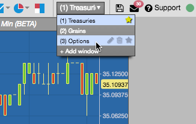
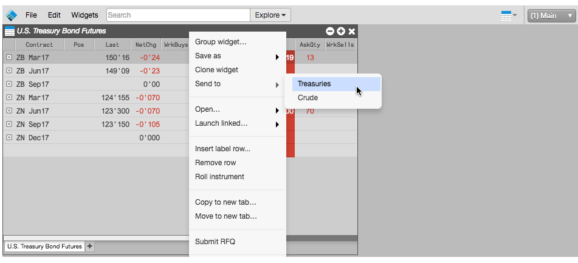

Using the workspace windows functionality, you can add and switch between multiple windows in a single workspace. After adding a window, you can also rename it, delete it, or set it as your default window.
To add a window:
From the menu bar, click the Windows drop-down selector and click +Add window.
Enter the name for the window, and click Save.

The new window opens and is added to the Windows drop-down selector.

Optionally, from the Windows drop-down selector, you can set the default window to open with the workspace, change the name of a window, and delete a window.

To switch between windows:
From the workspace title bar, click the Windows drop-down selector.
Switch between windows using one of the following methods:
Select the desired window from the Windows drop-down selector.

Use the CtrL+window-number keyboard shortcut.
For example, to switch to the Grains window in this case, you would type Ctrl+2.
To send a widget to another window:
